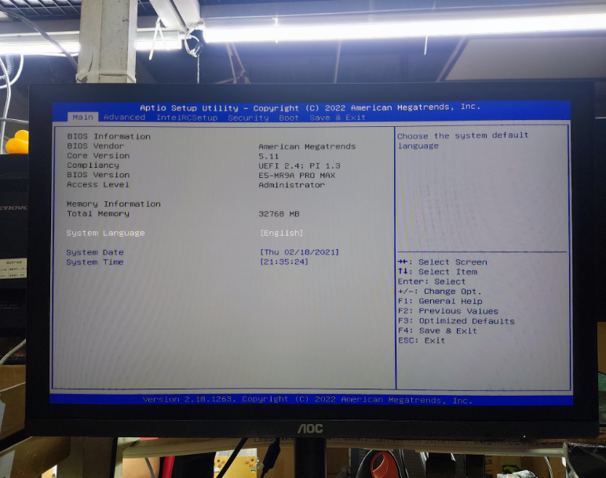

The MACHINIST X99-MR9A PRO MAX, a slightly improved successor of the X99-MR9A PRO, is designed for mid/high-range Intel Xeon processors of series E5 V3/V4.
The X99-MR9A PRO MAX has multiple new features from the classic MR9A, such as an improved VRM with an obnoxiously whiny and ineffective fan, an M.2 WiFi slot, and a very useful post-code indicator.
This motherboard has plenty of expansion and storage slots, a relatively good VRM, and good compatibility with BIOS firmware for other motherboards, making it a good choice for users who have lots of drives, want lots of performance, pain in the ass, or a fully stable system for a cheap price.
| MACHINIST X99-MR9A PRO MAX | |
|---|---|
| Feature | Specification |
| Socket | LGA 2011-v3 |
| Chipset | B85 (Q87/Z87/C226?) |
| CPU Support | Intel Core i7, Xeon E5-1600/2600 (v3, v4) |
| Memory Support | 4x DDR4 DIMM 2133/2400/2666/3000/3200/3600 MHz, Quad Channel, ECC REG, max. 128 GB |
| Memory Timings & Voltage Control | Hidden in BIOS firmware |
| Expansion Slots | 3x PCIe x16, 1x PCIe x4, 1x PCIe x1 |
| Storage | 1x M.2 SATA, 1x M.2 NVMe, 4x SATA 3.0, 2x SATA 2.0 |
| Back Panel | 2x PS/2, 6x USB 2.0, 2x USB 3.0, 1x Gigabit LAN, Audio |
| Fan Headers | 1x 4-pin CPU, 1x 4-pin case fan, 2x 3-pin case/pump fan |
| Extra Headers (for case) | Audio, JCOM, JLPC, USB 3.0, USB 2.0 |
| Power Interface | 1x 8-pin CPU, 1x 24-pin motherboard, 6/8 phase VRM (depending on revision) |
| Form-factor | ATX, 215x303 mm |
The following is a test of the VRM temperatures under extreme stress-test conditions.
| Feature | Specification |
|---|---|
| CPU | Intel Xeon E5-2666 v3 (turbo unlocked, 10C/20T, 135W, 3.5 GHz) |
| Undervolted? | Yes (60-50-0) |
| Software | AIDA64 (FPU Only) |
| CPU Cooling | ID-COOLING SE-224-XTS |
| VRM Cooling | Stock Heatsink/Fan |
| Stress Time | ~15 minutes |
| Sensor | Temperature |
|---|---|
| CPU | 63 °C |
| CPU Package | 67 °C |
| CPU Core 1 | 53 °C |
| CPU Core 2 | 54 °C |
| CPU Core 3 | 53 °C |
| CPU Core 4 | 55 °C |
| CPU Core 5 | 55 °C |
| CPU Core 6 | 54 °C |
| CPU Core 7 | 57 °C |
| CPU Core 8 | 61 °C |
| CPU Core 9 | 60 °C |
| CPU Core 10 | 58 °C |
| Room (Ambient) | 22.2 °C |
| VRM (Top) | 41.5 - 46.8 °C |
| VRM (Bottom) | 65.1 - 76.5 °C |
| VRM (Capacitors) | 46.5 - 67.9 °C |
The stock BIOS firmware on the MACHINIST X99-MR9A PRO MAX, just like other server motherboards, has tons of options. Unfortunately, access to the Memory Voltage & Timings Control section (and many others) is hidden and inaccessible without modifications.
Another downside - lack of Smart Fan functionality on all 4-pin fan headers except the CPU.
The motherboard temperature sensor does not function correctly either.
The X99-MR9A PRO MAX does not have a display port, and the BIOS will refuse to boot without a GPU present with a GPU-related post-code. No support for ReBAR is built in and will require adding a driver in the firmware.
The BIOS lacks read-write protection by default, allowing for direct flashing with FPTW.
⚠️ Please note that modifying the BIOS firmware may cause system instability if not done carefully.